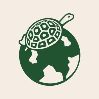
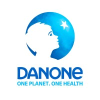
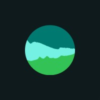
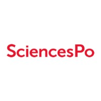

Rugby
20 years of playing in France, the United States and Hong Kong, including several years as captain.
Currently playing for Les Petit Pères, a nomadic rugby team based in Paris.

Sustainability Project Manager · Data Science & Machine Learning
A graduate of Sciences Po Paris in International Business & Sustainability, I have gained experience in several companies. In particular, I worked on renewable energy at Ekwateur, on Danone’s sustainability strategy, and on EcoVadis’s Asia-Pacific expansion strategy.
To add data skills to my profile, I completed Le Wagon’s Data Science & AI bootcamp, and I am now pursuing a Master’s in Data Science & Machine Learning with OpenClassrooms, as an apprentice sustainability project manager at Nature & Découvertes. I use data to support the ecological transition: carbon footprint, responsible purchasing, product end-of-life.
I am looking for a position matching my profile starting in April 2027, at the end of my apprenticeship.

Nature & Découvertes
EcoVadis

Danone

Ekwateur, renewable energy provider
Crush On, circular fashion e-shop
OpenClassrooms
Training to develop skills in data analysis, predictive modelling and artificial intelligence. Learning Python, machine learning algorithms, deep learning and the deployment of data-driven models to solve real business problems.
Le Wagon
2-month on-campus programming bootcamp focused on Data Analysis (Python, SQL), Decision Science (Pandas, NumPy) and Machine Learning (Scikit-Learn, TensorFlow).

Sciences Po Paris
Management and business skills to help industries reach their sustainable development goals.
Courses: Creating Sustainable Businesses, Building Sustainable Supply Chain, Doing Business in Emerging Markets.
City University of Hong Kong
A semester dedicated to learning about sustainable development in Asia, as well as the history and philosophy of Asian societies.
Sciences Po Paris
Reims campus. Major in Political Humanities and minor in International Relations.
Activities and societies:
Lycée Français de New York
Out of 1,500 brain MRI scans, only 100 are annotated by radiologists. The challenge: leverage the unlabelled images through semi-supervised learning to outperform a model trained on the 100 annotations alone.
Deployment of the Project 3 model as a web API: any application can send it a building’s characteristics and receive an estimate of its emissions.
Predicting the energy consumption and CO2 emissions of non-residential buildings from their characteristics (floor area, use, year built…), to avoid costly surveys and help the city reach carbon neutrality by 2050.
Analysis of World Bank education statistics to identify the countries where the company Academy should expand first.
Live tracking website for a friendly athletics meet (5 events, around twenty participants), designed to be checked on a phone throughout the day.
20 years of playing in France, the United States and Hong Kong, including several years as captain.
Currently playing for Les Petit Pères, a nomadic rugby team based in Paris.
Finisher of the San Sebastián Half Marathon, the Venice Marathon and the Paris Marathon.
Training for the Morzine-Avoriaz trail race in June 2027.
Salvation Army in Paris and initiatives in New York, from 2016 to 2023: teaching French to asylum seekers, preparing and distributing meals for people in need, charitable initiatives with the French Consulate in New York.
An opportunity or a question about a project? Feel free to get in touch.